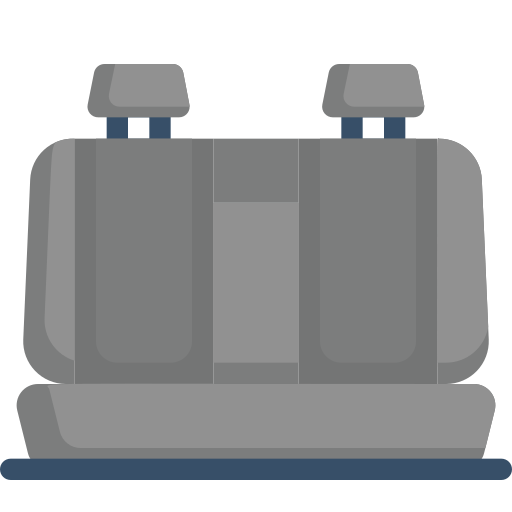

Nossos serviços:
Limpeza de colchões
10€/m²
Eliminação de ácaros, manchas e mal odores. Higienizamos seu colchão a ponto de estar como novo!
Limpeza de tapetes
5€/m²
Limpeza profunda, remoção de sujeiras e odores. Seu tapete revitalizado e impecável!
Limpeza de sofás
13€/lugar
Higienização total, sem manchas, ácaros ou cheiros desagradáveis. Conforto renovado no seu sofá!

Limpeza de estofos
10€/lugar
Cuidados especiais para seus bancos: adeus sujeira e mau cheiro. O interior do seu carro merece o melhor!